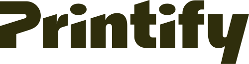

01 · The framework
A toolbox for production‑ready data and AI pipelines.
Open-source Python framework that applies software engineering principles to help write reproducible, maintainable, and modular data engineering and data science code.

02 · How it works
An opinionated, standardized layout. Every Kedro project looks the same — new team members are productive on day one.
Configuration as code that abstracts where data lives and how it's loaded — pandas, Spark, S3, Snowflake, partitioned, versioned. Nodes operate on data, not file paths.
Plain Python functions, with declared inputs and outputs. No decorators, no framework gymnastics — just functions you can unit test in isolation.
Compose nodes into a DAG. Kedro resolves dependencies automatically from dataset names — no manual ordering, no orchestrator lock-in.
03 · Opinionated structure
One kedro new bootstraps a full project with the same shape. Walk into any Kedro repo and know where things live.
src/ — packaged, importable, testableconf/ — base + environment overridesdata/ — layered progression from raw → output# $ kedro new → spaceflights/ spaceflights/ ├── conf/ │ ├── base/ # catalog.yml, parameters.yml │ └── local/ # credentials.yml ├── data/ │ ├── 01_raw/ │ ├── 04_features/ │ └── 06_models/ ├── notebooks/ ├── src/spaceflights/ │ ├── pipelines/ │ └── settings.py ├── tests/ └── pyproject.toml
04 · Separate I/O from logic
Swap CSV for Parquet, local for S3, dev for prod — one YAML edit. No node changes. No environment-specific branches.
shuttles: type: pandas.ParquetDataset filepath: s3://kedro-demo/02_intermediate/shuttle.parquet credentials: dev_s3 model_input_table: type: spark.SparkDataset filepath: s3a://kedro-demo/05_model_input/features.parquet file_format: parquet save_args: mode: overwrite trained_model: type: pickle.PickleDataset filepath: data/06_models/regressor.pkl versioned: true
05 · The unit of work
import pandas as pd def preprocess_companies(companies: pd.DataFrame) -> pd.DataFrame: """Clean company records.""" companies["iata_approved"] = _is_true(companies["iata_approved"]) companies["company_rating"] = _parse_pct(companies["company_rating"]) return companies def create_model_input_table( shuttles: pd.DataFrame, companies: pd.DataFrame, reviews: pd.DataFrame, ) -> pd.DataFrame: """Join tables to produce model input.""" return ( shuttles .merge(companies, on="company_id") .merge(reviews, on="shuttle_id") )
A node is a plain Python function. Type hints are optional, docstrings are normal Python, and you can call it directly from a notebook or unit test.
pytest06 · Composition
Each Node declares its inputs and outputs by name. Kedro resolves the DAG, runs in topological order, and reads/writes through the catalog.
from kedro.pipeline import Node, Pipeline from .nodes import ( preprocess_companies, create_model_input_table ) dp_pipeline = Pipeline([ Node( func=preprocess_companies, inputs="companies", outputs="preprocessed_companies", ), Node( func=create_model_input_table, inputs=[ "shuttles", "preprocessed_companies", "reviews", ], outputs="model_input_table", ), ])
Kedro is like dbt if it were created by Python data scientists instead of SQL data analysts — including both being created out of consulting companies.
The milestone
1.0 isn't just a version bump. It's a public-API commitment — a foundation you can build on with confidence, and a modular ecosystem you can grow around it.
07 · What's inside
Datasets are first-class. Dict-style access, iteration, runtime assignment. API-clean after a year of research.
catalog["reviews"]
Skip nodes whose outputs already exist. Requested since 2019 — finally shipped.
kedro run --only-missing-outputs
Run status, timings, and dataset stats overlaid on the DAG. See where things broke at a glance.
Exact matches, multi-namespace runs, dataset prefixing — the bits that confused everyone, sorted.
ParallelRunner + PartitionedDataset finally play nice. Configurable start methods.
Brand-new IA, search, and modern install paths (uv, pipx, conda). Built for the way people read in 2025.
08 · Beyond the core
Built and shipped by the Kedro core team — part of kedro-org, versioned alongside the framework. Plus native integrations baked into core.
Independent maintainers connect Kedro to the wider data & ML world — orchestrators, warehouses, deployment targets, MLOps.
09 · Ecosystem highlights
Convert entire Kedro pipelines to custom MLflow models. Deploy them virtually anywhere.
Generate Databricks jobs from Kedro pipeline definitions. Supports everything Declarative Automation Bundles support.
$ kedro databricks init $ kedro databricks bundle $ kedro databricks deploy
Author in Kedro, orchestrate with Dagster. Auto-translates pipelines into Dagster jobs with native asset materializations and schedules.
10 · GenAI & agents
Same software-engineering discipline. New data paradigms.
New dataset types for documents, embeddings, vector stores. Patterns for chunking, prompts, and retrieval baked into the catalog.
Skills to empower coding agents to drive Kedro changes towards a mergeable state, and the knowledge to proactively review Kedro pull requests.
Bring rigor to RAG and agent workflows. The blog already ships a Kedro × LangChain chatbot reference — a lot more coming.
11 · The core keeps shipping
Two of the most-requested ideas in the roadmap are aimed squarely at how you author and how you run Kedro — no GenAI required.
A visual, drag-and-drop pipeline builder. Compose nodes, wire datasets, edit parameters — all from the browser. Commit the same Kedro project to git.
An enhanced Kedro session for repeated, multi-run execution, plus a public API for pipeline execution and inspection — Kedro behind an HTTP boundary.
from kedro.framework.session import KedroSession with KedroSession.create() as session: session.run(pipeline="dp", tags=["daily"]) session.run(pipeline="ds", params=config) # reuse session.inspect() # status
12 · Spotlight
Reproducibility is in our tagline. So it should be no surprise that some of the most rigorous open-science work is being built on top of us.
13 · Open science · 01
A drug-repurposing knowledge graph built to find new uses for every approved drug — for every disease.
End-to-end Kedro pipeline: clinical & biomedical ingestion → embeddings → ranking → candidate-disease pairs, fully reproducible.
13 · Open science · 02
A modern biomedical knowledge graph spanning molecular, anatomical, clinical, and environmental modalities — grounded in 18 ontologies.
Reproducible, deterministic, infrastructure-agnostic Kedro pipeline with parallel execution. Validated with PaperQA3.
optimuskg Python client14 · THE END